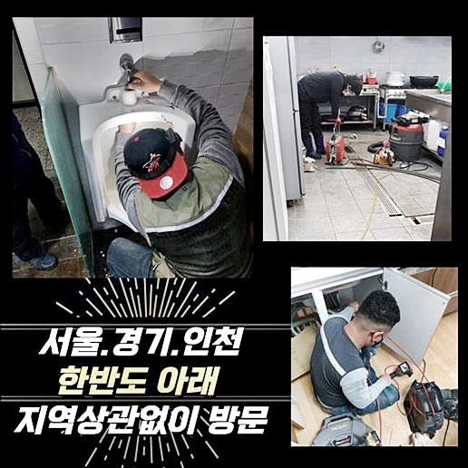
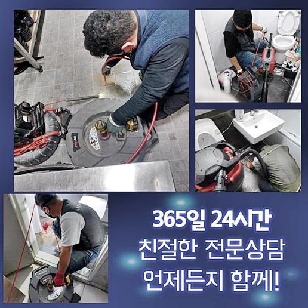
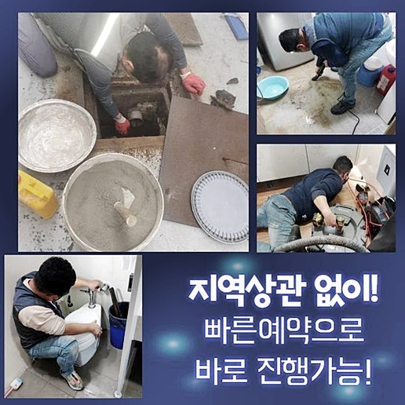
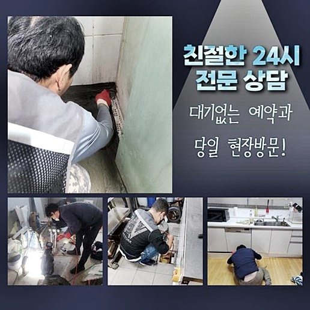
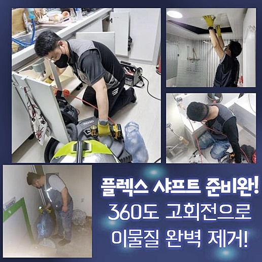
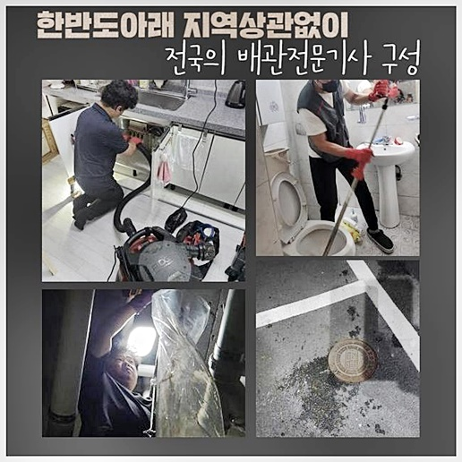
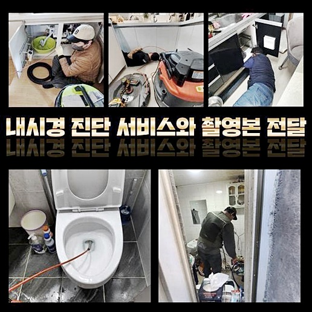

🏠 고덕면싱크대막힘 지산동 하수구뚫는비용 설비하는곳
용인시 처인구 배관막힘 전문 시공 후기

📋 작업 개요
- 위치: 용인시 처인구, 수원시 영통구, 화성시 동탄
- 서비스 유형: 배관막힘, 하수구청소, 고압세척, 내시경점검
- 작업 일시:
- 업체명: 하수구수사대 (010-5615-2118)
🔍 문제 상황
고덕면싱크대막힘 지산동 하수구뚫는비용 설비하는곳
하수구막힘으로 출동했었던 의뢰자의 식당현장은 물이빠지는게 조금씩 느려졌다고 의뢰를주셨는데 이러한현상은 신속조치가 필요하다는 신호탄이에요
셀프조치를 통해서 시도해보다가 잠시동안만 해결되고 불편감이 느껴지고계시면 전문적인작업을받아보시는게 좋겠습니다
해결을원한다면 저희업체를 통하여 전화주신다면 조속한 출동해드려서 해결해드릴게요
영업시설에서 하수구가막혔을시 문제를 타파켜시켜드리고 쾌적한배관을 유지하실수있게끔 도와드릴테니 걱정마세요
고객님의 설명을통해 종합적인 판단을거쳐 제일먼저 찌꺼기이물을 석션기기로 제거한뒤 배수관을열어 내부상태를 확인하고자했죠
하수구안을 들여다보고자 연결되어있는 주름관들을 해체하고나서 확인해봤어요
내부깊숙히 쌓여버린 슬러지들과 오염물질들을 말끔히없앴고 정화과정까지 거쳤답니다
악취의원인 막힘증세를 해결했고 원활히 배수될수있도록 조치를취했죠
원활하게 배관이용을 하실수있게끔 유지방법부터 관리방법까지 일러드렸답니다
확실한조치로 배관을뚫어내 고객님의 만족감을 높일수있었죠
두번째현장의 경우 아파트시설 현장이었는데 필요한장비를 챙겨서 문제장소를 방문했어요

🔎 원인 분석
💡 전문가 진단: 정밀 진단 장비를 사용하여 슬러지의 고착 여부를 판명하고 타격/세척 작업을 실시했습니다.
물빠짐이 며칠동안 느려지고있다고 알려주셨고 혼자서직접 해결하려고 조치를 취해봤지만 온전하게 해결되지못했다고 불편함이 느껴진다고 하셨어요
이러한문제는 기술능력이 필수적이므로 저희업체에서 도움을드릴수있어 좋게생각해요
저희작업으로 불편한점이 해소되었기를 바래요
같은일로 막힘이 다시한번 일어났을시 마음편안히 전화주신다면 빠르게 해결해드리겠습니다
배수가 정상적으로 진행되지않고 물이넘치는 상황까지 이어져서 음식물냄새도 퍼지고있는 상태였으며 이러한문제로 인해서 고객님에게 곤란함을 야기시켰죠
싱크대사용시 물이빠져나가지않고 물이넘치기까지 하고있다면 건강상으로도 해로울수있어요
그래서 빠른조치가 요구되었어요
다양한현장의 경험이풍부한 기술자분들이 직접내방하여 막힌이유에 대해서 알아내드렸어요
발생한이유를 확인해보니 배관속슬러지 잔해물들로인해 막힘이 일어난것으로 파악할수있었네요
계속해서 강조하는것으로 막힘증세는 빠른대처를 통해서 처리해봐야하는데 하수관막힘으로 악취문제까지 연결된다면 일상을 영위하는데있어 불편함을 야기시킬수있어요
저희들은 고객님들의 깔끔한환경을 만들어드리고자 조속하게 처리해드릴것을 약속합니다!
상황마다 적절하게 조치해서 문제를확실히 타파시키겠습니다
정상적인 배수시스템을 만들기위해 노력하고있고 혹여라도 실패하게될경우 비용청구를 하지않습니다

🔧 작업 과정
막히는일에있어 예방하는 방법까지 안내하고있어요
고객께서 쾌적환생활을 유지할수있도록 최선다해 작업할게요!
저희업체에서는 배수관마다 특징이무엇인지 고려한후 해결법을찾는 과정을통하여 진행하고있어요
배관카메라를 활용하여 배관속을 체크하고 오염정도와 배관구조를 파악합니다
카메라기기는 이물이 쌓인상태를 명확하게 보여주고 이를바탕삼아 고객분에게 현재상황이 어떠한지 설명하고있어요
이런절차로 효율적이고 정확한 서비스로 제공드리고있어요
정기적으로 하수구청소를 받아보시는것이 예방하는데있어 최고의 방법이에요
배관깊은곳에 기름슬러지나 석회물질이 쌓일수있기에 제거해줘야하죠
다시한번 일러드리는것으로 하수구내시경을 쓰면 하수구안쪽까지 진단할수있죠
이뿐아니라 하수구속 노폐물의 형태도 확인할수가있죠
이물질을 없애기위해 전문장비들이 사용되어야해요
청소작업시 슬러지의경우 분쇄시키기 어렵기에 약품이나 물을이용해 누그러뜨린후 흡입장비로 제거하는것이 효율적이에요
석회물로인해 단단하게 굳어버린경우 샤프트장비를 써서 제거할수있어요
작업했던곳은 음식물들과 뭉쳐진 슬러지이물이 하수관을 막히게한 상황이었는데요
이러한 상황이다보니 석션만으로는 대처하기 어려운상태였고 플렉스샤프트기로 분해과정을 거친후 고압세척과정으로 하수도를 정리하기로 수립계획을 짰습니다
이것으로 배수가 막혔던현상이 완전하게 뚫릴것으로 예상이됩니다
샤프트로 분쇄해보니 잔여되어있던 석회들이 분해되었어요
막힌위치에서는 분해강도를 조절하면서 진행해야했는데 이를통해서 하수구에파손을 발생시키지않고 분쇄할수있었네요
분쇄를마치니 오염물질이 분해되서 청소작업을 진행하기 용이했으며 이후엔 고압청소로 시도했는데요
수압력이쎈 물을쏴서 배관내부의 퇴적물질을 제거해냈는데 이과정도 매한가지로 하수관손상을 입히지않으려면 조심해서 작업해야했죠


✅ 작업 완료
모든과정들을 마무리한후 기계를챙겨 철수할수있었죠
하수구가 막히는것을 방치시키지말고 문제발견시 조치해보실것을 추천드려요
문제를 내버려두신다면 2차적인피해로 이어질수있어 빠른처리를 해보셔야해요
어떤지역이든 1시간안팎으로 도착해드릴수있고 투명히 작업계획을 공개하고있사오니 걱정하지마세요
믿고맡겨만 주신다면 믿어주심에 보답으로 성공적인결실로 나타내겠습니다!
글을읽으시면서 궁금증이 풀리지않으셨다면 편하실때 연락주셔서 질문하신다면 세세한응대로 맞이하겠습니다




⚠️ 하수구 배관 막힘 예방 및 관리 가이드
- ✅ 머리카락, 비닐, 물티슈 등 물에 분해되지 않는 이물질은 절대 흘려보내지 마세요.
- ✅ 기름기 많은 식기는 설거지 전 키친타올로 먼저 기름때를 닦아내세요.
- ✅ 주기적으로 배수구에 뜨거운 물을 가득 부어주어 유지방 고착을 방지하세요.
- ✅ 작업 후 1년 이내 재발 시 무상 A/S 보증 서비스를 제공합니다.
💡 핵심 정리
- 확실한 장비 작업(내시경 점검 및 샤프트 스케일링)으로 원인을 뿌리 뽑습니다.
- 작업 후 1년 이내에 동일한 부위 재발 시 100% 무상 A/S 서비스를 보장합니다.
- 서울 · 경기 · 인천 전 지역에 24시간 언제든 긴급 출동할 수 있도록 항시 대기 중입니다.
❓ 자주 묻는 질문 (FAQ)
🚨 용인시 처인구 배관막힘 문제로 고민이신가요?
정확한 원인 진단과 확실한 시공으로 재발 없는 해결을 약속드립니다.
24시간 긴급 출동 | 서울 · 경기 · 인천 전지역 | 1년 내 재발 시 무상 A/S